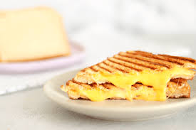

Grilled Cheese

Description
Grilled cheese is a nostalgic meal for many. Nothing can beat the comfort of melted cheese sandwiched between toasted buttered bread!
Ingredients
- 5 tbsp. softened butter
- 4 slices sourdough bread
- 2 cups shredded cheddar
Steps
- Spread 1 tablespoon butter on one side of the bread. With butter side down, top each slice of bread with about ½ cup cheddar.
- In a skillet over medium heat, melt 1 tablespoon butter. Add two slices of bread, butter side down. Cook until bread is golden and cheese is starting to melt, about 2 minutes. Flip one piece of bread on top of the other and continue to cook until cheese is melty, about 30 seconds more.
- Repeat for the second sandwich, wiping skillet clean if necessary.